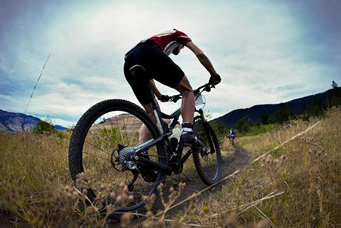
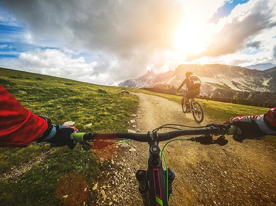
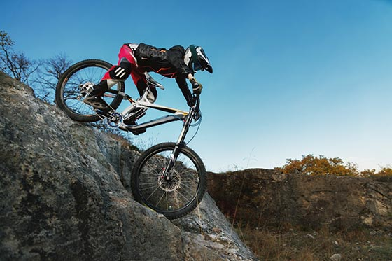
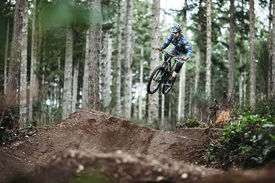
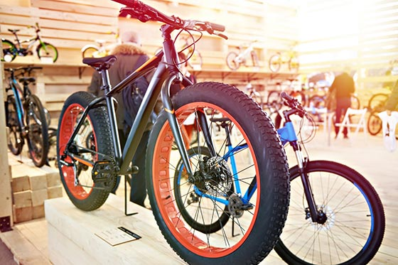

Mountain biking resources
Welcome to all about mountain biking! Here you can learn the basics of mountain biking
Hardtail or full suspension?
The term Hardtail or Fully does not describe the bike's frame. Rather, it describes the bike's suspension system.
Full Suspension MTB
With the Full Suspension, the front wheel and back portion of the bike have suspension. The full suspension helps compensate for shocks in uneven terrain, and a front suspension helps the front wheel maintain contact with the ground when going uphill. Suspension also helps protect your back.
Where it shines:
- high speeds
- challenging and steep terrain
- Jumps and drops
Disadvantages
- heavy
- expensive due to large components
- maintenance-intensive
Hardtail (back wheel has no suspension)
With Hardtail, just the front wheel has suspension. The rear wheel does not have suspension. A Hardtail is suitable if you:
- want to be fast and agile on the road
- bike mainly on forest roads and flat tracks
Not all mountain bikes are created equal. Each MTB discipline is different and therefore has different needs. While the differences are not always crystal clear, you can mainly distinguish the types based on their suspension systems.
Different types of Mountain Bikes
Cross country bike
The bike is mainly used in cross-country races. Races usually take place:
- through forests
- through fields
- on gravel paths
- on meadow paths
- through paths with smaller gradients and descents
The focus with cross county MTB is on maneuverability and a sporty riding position.
Frame: hard and carbon
Suspension: Hardtail
Amount of suspension give: 100 - 120 mm
All mountain & enduro bike
The All Mountain Bike describes a wide range of uses, namely in the mountains. It is suitable for
- easy and longer tours in the lowlands (at around 10 - 14 kg, it is considered light)
- ascents
- downhill descents on easy and medium-difficulty trails
- small jumps and drops
The focus with cross county MTB is on maneuverability and a sporty riding position.
Suspension: Full Suspension
Amount of suspension give: 120 - 160 mm
You can reduce or lock the give on the suspension system on many models. This makes it easier for you to ride uphill.
The Enduro Bike is a mix between the all mountain bike and the freeride mountain bike. It is designed for a wide range of uses:
- faster descents than the all mountain bike
- higher jumps than the all mountain bike
- easier to ride uphill than with the freeride mountain bike
Suspension: Full Suspension
Amount of suspension give: 140 - 180 mm
Downhill mountain bike
The downhill mountain bike is made:
- to traverse challenging trails with steep gradients as fast as possible.
The shape of the downhill mountain bike is unmistakable: wide handle bars, thick tyres and a low saddle, for an optimal centre of gravity.This type of mountain bike is quite heavy at 18 kg, because the frame must withstand the stress of big jumps. The tyres are thick and have good grip. Riding uphill is virtually impossible for a downhill mountain bike.
Suspension: Full Suspension
Amount of suspension give: 180 to 250 mm
Freeride mountain bike
The bike is cross between a downhill and cross country mountain bike. They are made for:
- very steep terrain
- technical obstacles and trails
- Long and high jumps and drops
While the freeride mountain bike is slightly lighter than its downhill counterpark, it's still no featherweight. Very stable components are used to ensure mountain bikes withstands extreme jumps (up to 20 meters). Therefore, mountain bikes are priced a bit higher. Some Freeride mountain bikes are also suitable for uphill riding.
Suspension: Full Suspension
Amount of suspension give: 165 - 200 mm
Fat bike
Fat bikes are made for tough surfaces, for example:
- snow
- ice
- sand
- surfaces with bad traction
You can recognise fat bikes by their wide tyres. At 4 to 4.8 inches, they are twice as wide as conventional mountain bike tyres. A suspension system is often not included with fat bikes. The wide tyres are kept at below normal levels to absorb most of the shock.